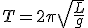

परिचय :
1. सेकंड लोलक:
सेकंड लोलक वह लोलक होता है, जिसका एक चरम स्थिति से दूसरी चरम स्थिति तक जाने का समय 1 सेकंड होता है। इस प्रकार, उसका पूरा आवर्तकाल 2 सेकंड होता है।
2. सरल लोलक:
यदि कोई वस्तु एक स्थिर बिंदु से एक हल्के, अप्रत्यास्थ (non-elastic) और लचीले धागे द्वारा बंधी हो और गुरुत्वाकर्षण के प्रभाव में दोलन करे, तो इसे सरल लोलक कहा जाता है। प्रयोगों में, आमतौर पर एक छोटी धातु की गेंद (बॉब) को धागे के एक सिरे से बाँधकर लोलक बनाया जाता है। लोलक की लंबाई वह दूरी होती है जो स्थिर बिंदु से गोला (बॉब) के गुरुत्वकेंद्र तक होती है।
3. लोलक की प्रभावी लंबाई:
लोलक की प्रभावी लंबाई (Effective Length) वह लंबाई होती है, जो उसके स्थिर बिंदु (जिससे धागा जुड़ा होता है) से लेकर गोला (बॉब) के गुरुत्वकेंद्र तक मापी जाती है। इसे निम्नलिखित रूप में लिखा जा सकता है:
L = l + r
जहां :
L = लोलक की प्रभावी लंबाई
l = धागे की लंबाई
r = गोले (बॉब) की त्रिज्या
सरल लोलक की संरचना
- लंबाई (L) – धागे या छड़ की लंबाई।
- द्रव्यमान (m) – बॉब का भार, जो सामान्यतः एक घनी वस्तु होती है।
- संतुलन स्थिति – जब लोलक स्थिर होता है और नीचे की ओर लटका होता है।
- विस्थापन कोण (θ) – संतुलन स्थिति से विचलन कोण।
- गुरुत्वजनित त्वरण (g) – पृथ्वी का गुरुत्वाकर्षण बल, जो लोलक को दोलन कराता है।
लोलक का दोलन और समय अवधि
सरल लोलक का दोलन एकल सदिश गति का उदाहरण है, जो अल्प कोणीय विस्थापन के लिए सरल आवर्ती दोलन करता है।
समय अवधि (T) :
जब कोणीय विस्थापन छोटा हो (θ < 10°), तो लोलक की गति सरल आवर्त गति के समान होती है। इसकी समय अवधि निम्नलिखित सूत्र से दी जाती है:
T=2\pi \sqrt{\frac{L}{g}
जहाँ,
T = दोलन की समय अवधि
L = लोलक की लंबाई
g= गुरुत्वजनित त्वरण (9.8 m/s²)
गुण एवं विशेषताएँ
- समय अवधि द्रव्यमान पर निर्भर नहीं करती, केवल लंबाई और g पर निर्भर करती है।
- छोटे कोणों के लिए सरल आवर्ती दोलन होता है, लेकिन बड़े कोणों पर सरल आवर्त दोलन नहीं होता है।
- गुरुत्वाकर्षण बल के कारण दोलन होता है और इसकी ऊर्जा गतिज एवं स्थितिज ऊर्जा के बीच परिवर्तित होती रहती है।
- आवर्तकाल केवल गुरुत्वीय त्वरण पर निर्भर करती है, अतः यदि इसे चंद्रमा या किसी अन्य ग्रह पर ले जाएँ, तो इसकी अवधि बदल जाएगी।
लोलक की गति में दो प्रकार की ऊर्जा होती है:
स्थितिज ऊर्जा (Potential Energy, PE): अधिकतम विस्थापन पर अधिकतम होती है।
गतिज ऊर्जा (Kinetic Energy, KE): संतुलन स्थिति ( शुन्य कोणीय विस्थापन ) पर अधिकतम होती है।
कुल ऊर्जा (E): नियत रहती है, जो इस समीकरण द्वारा दर्शाई जाती है:
E=PE+KE
E = mgh + 1 / 2 m v 2
प्रयोग एवं अनुप्रयोग :
- समय मापन में (प्राचीन घड़ियों में उपयोग)।
- भूकंप मापन (सिस्मोमीटर में)।
- गुरुत्वजनित त्वरण का निर्धारण करने के लिए।
- बच्चों के झूले, क्लॉक पेंडुलम आदि में।